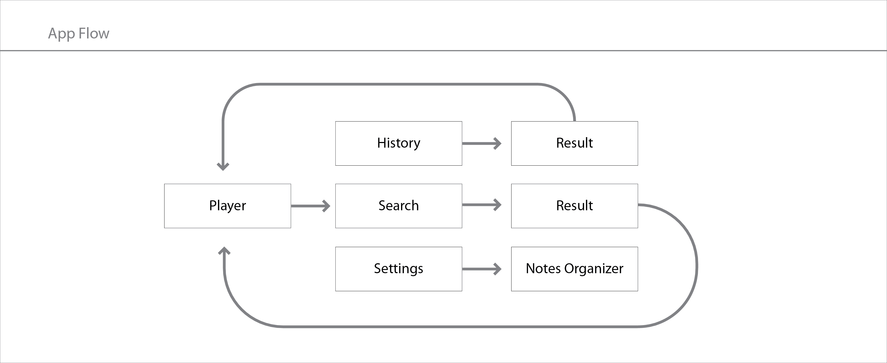
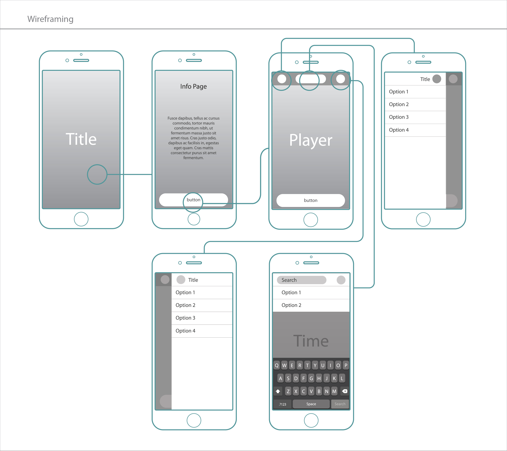
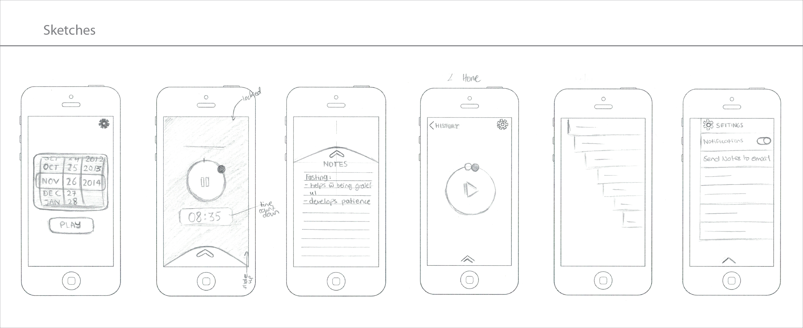
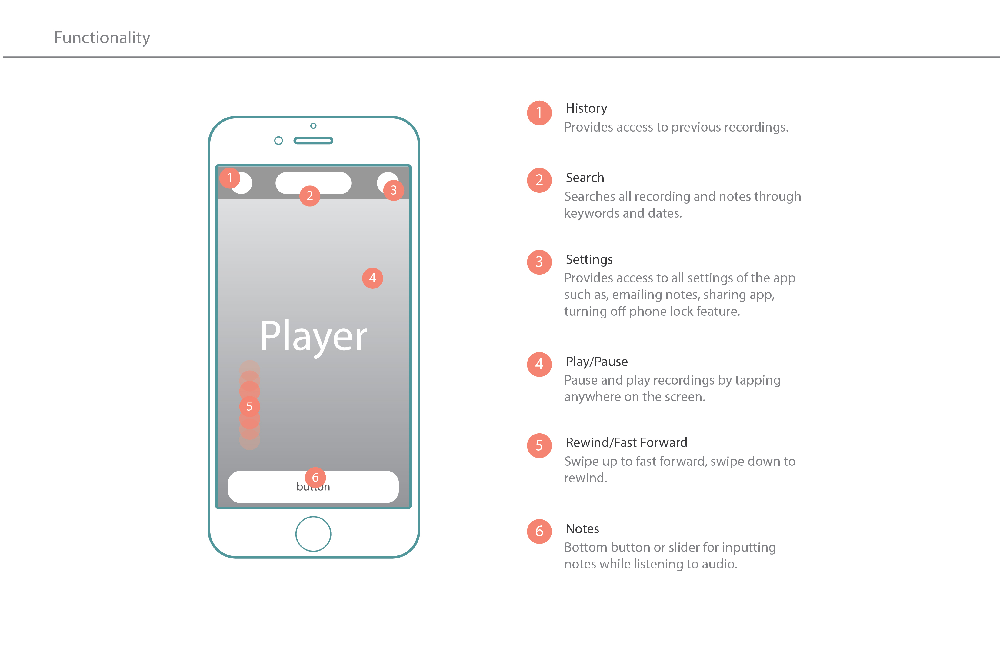
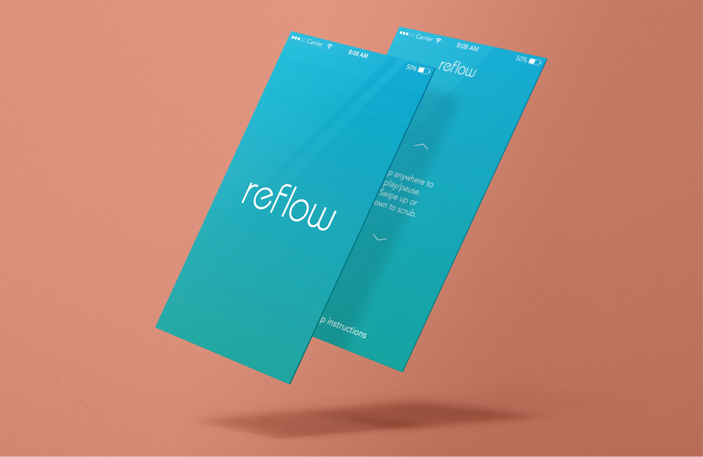
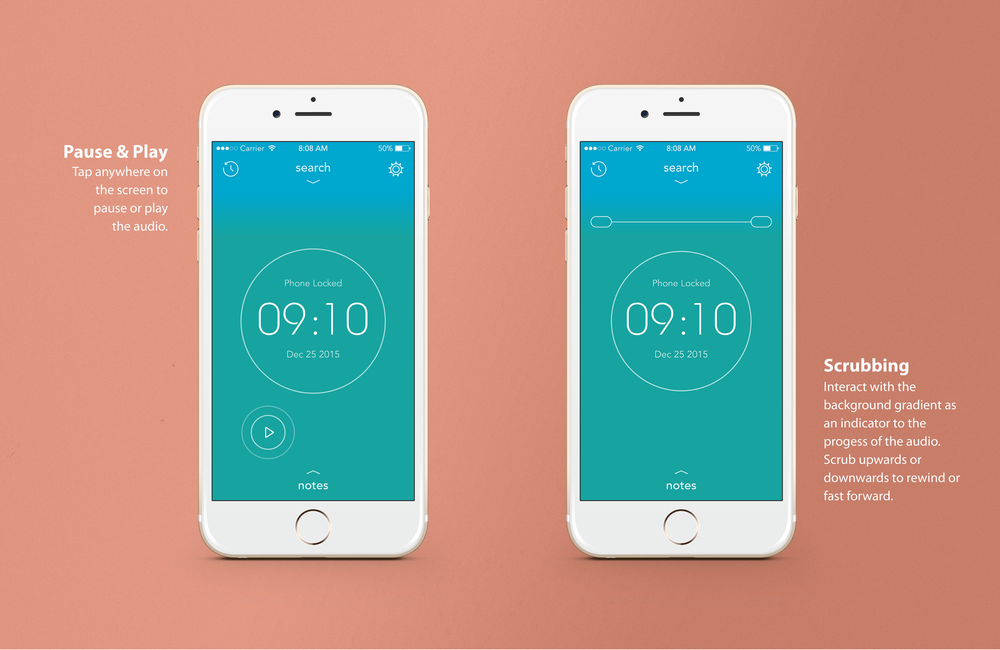
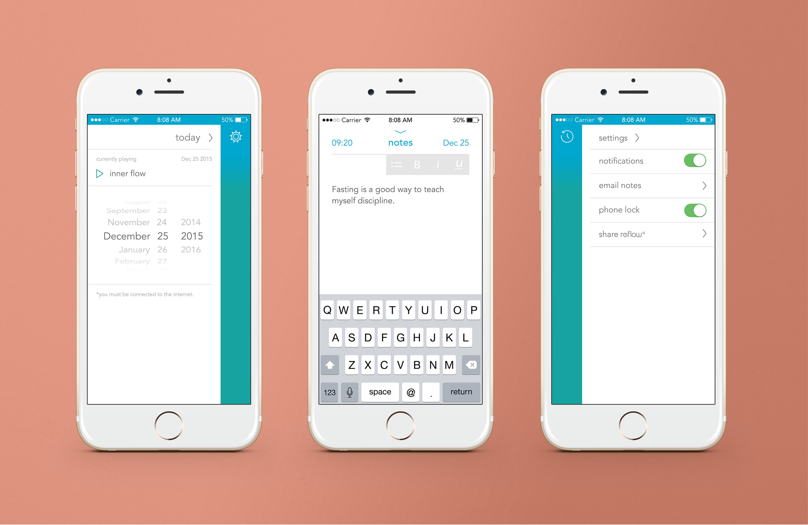
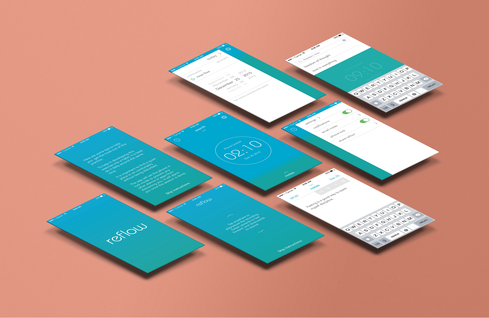
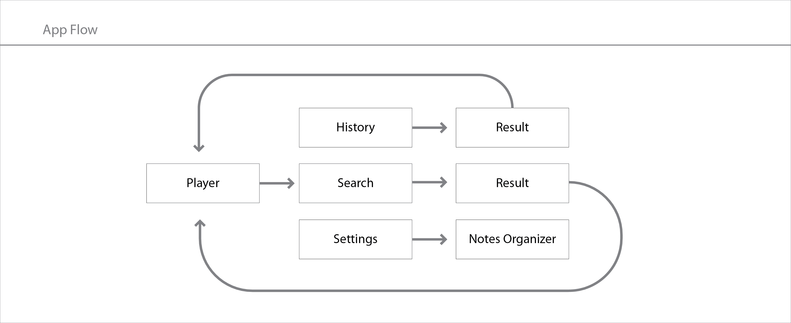
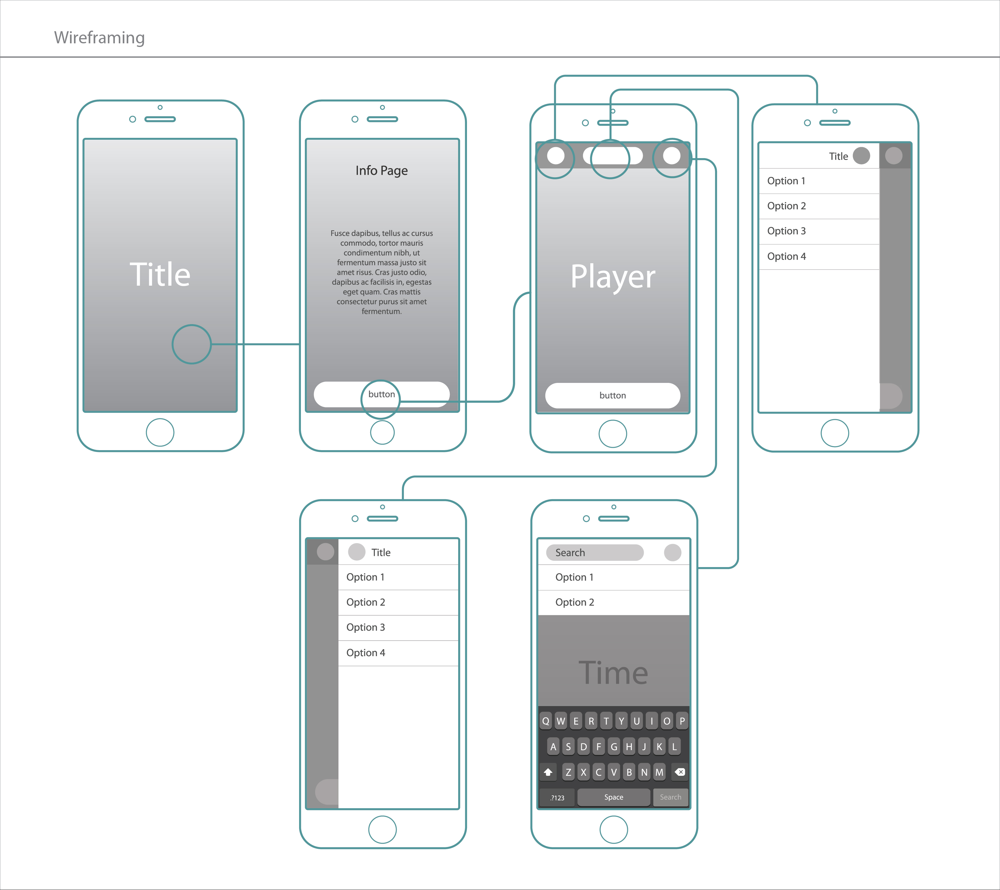
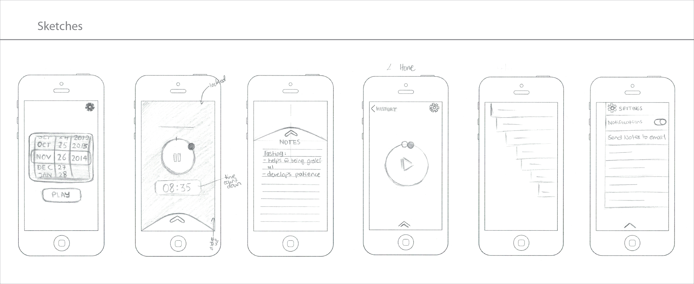
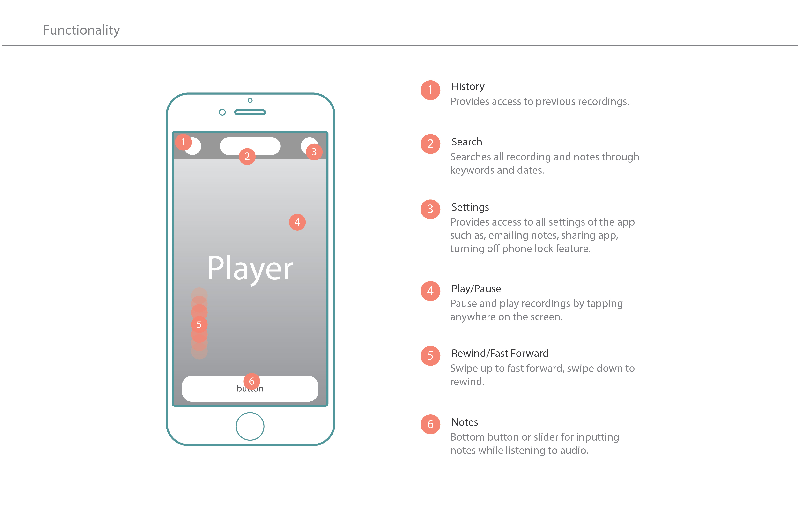
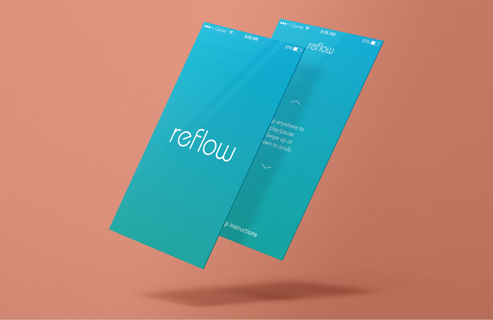
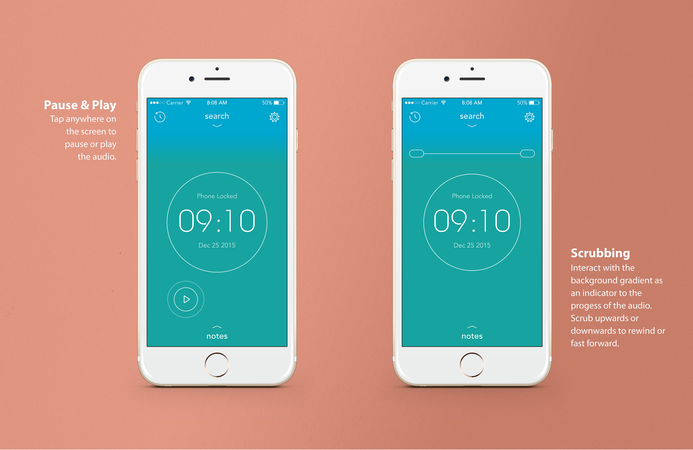
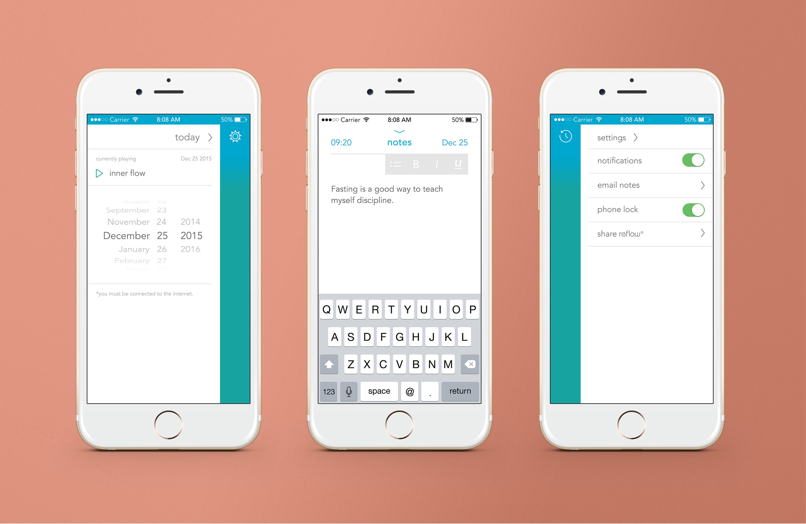
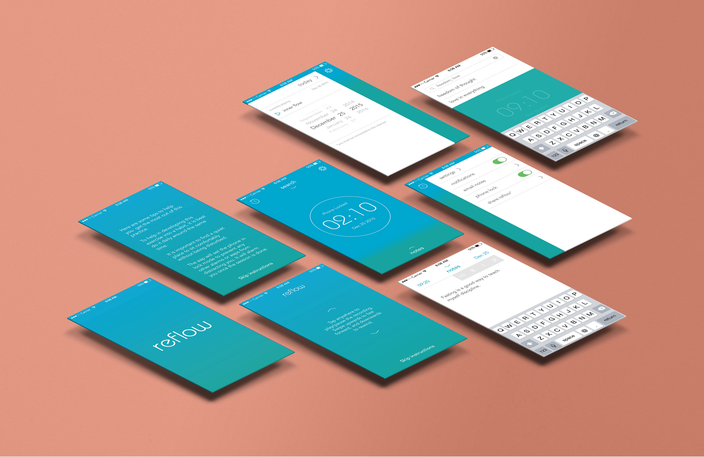
Reflow App
UI Design • Prototyping
Special Thanks to Jed Looker
Living in incredibly busy times, we often forgot to unplug. Reflow is a digital platform concept that helps us adopt a routinely habit of reflowing our minds with the right thoughts, before going off to our daily chores. The app is focused on encouraging self-reflection and acts as a reminder to sit out everyday and give ourselves room to breathe in thought.
The features of Reflow are simple. Playing an audio, a place to make notes of your reflections, and an archive to access previously played audios. It’s user friendly interface presents the main feature of playing an audio in an interactive way by dragging the gradient up or down to scrub through the audio.